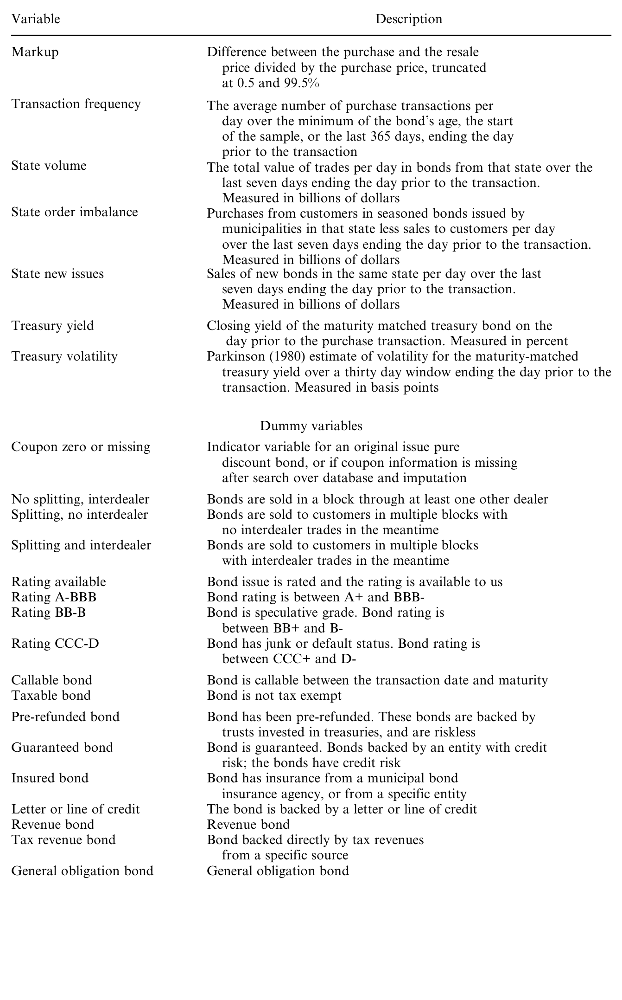
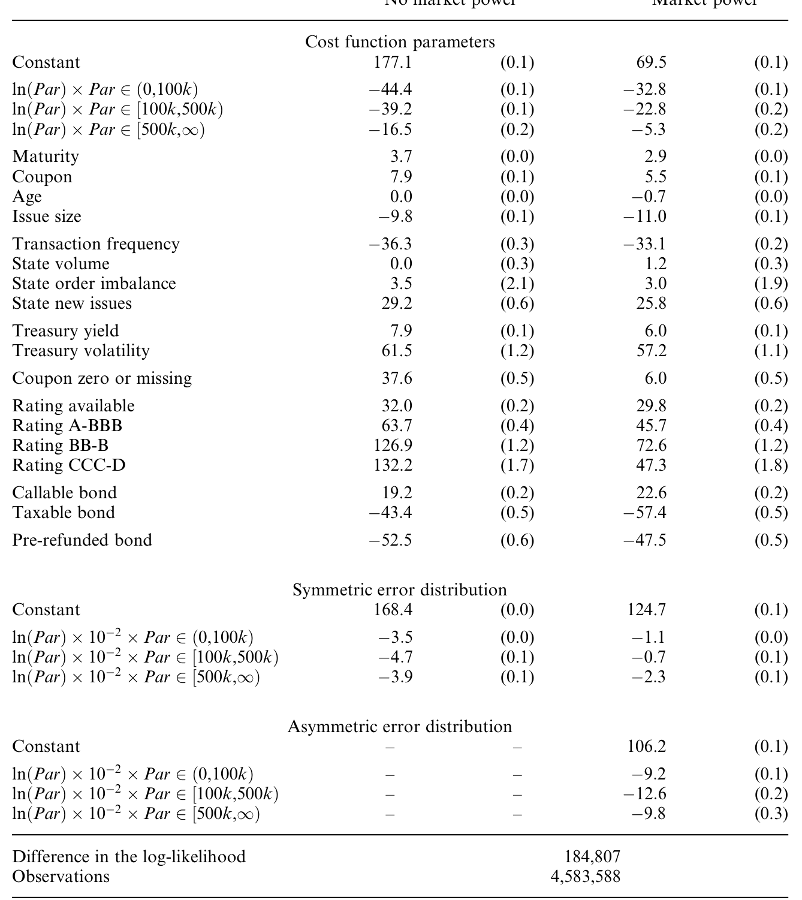
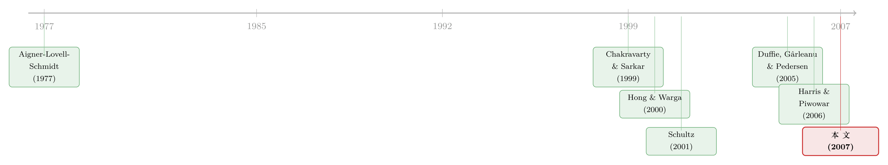

做市商的「无风险」生意：把成交成本拆成成本与议价能力
本文读的是 Green, Hollifield & Schürhoff (2007, Review of Financial Studies)：在一个不透明、分散的市政债经纪—交易商市场里，作者用一个「随机前沿」结构模型，把客户付出的往返交易成本拆成「交易商真实的中介成本」与「交易商的议价能力（市场势力）」两块——结果发现，后者远大于前者，而且越是小额、越像散户的交易，交易商的市场势力越大。
1 一个「无风险」却昂贵的市场
先说一个让人有点难受的事实。
美国市政债（municipal bonds）市场，体量大得惊人——存量约 $2 trillion，每年新发超过 $400 billion。但它有个怪脾气：高度分散、极不透明。每年有 10,000 到 15,000 个独立的债券发行，2003 年平均一个发行才 $26 million；而一个发行又常常被切成 10–30 只不同期限的债券。债大多被散户（2004 年占 33%）、保险公司（12%）、银行与个人信托（5%）拿在手里，买了就不太动——MSRB 报告说，1998 年 3 月到 1999 年 5 月间，71% 的在外发行一整年都没成交过一次。
没有集中交易所，没有盘前报价。你想卖一只债，得挨个打电话给交易商，或者向他们询价。比价是要花钱的。于是市场被自然地切成了一个个本地的小角落，给中间商留出了滋生「本地垄断势力」的土壤。
这件事早就惊动了监管者。SEC 曾裁定，加价（markup）在 1.42% 到 5% 之间的交易「实质性地超过了行业惯例」；NASD 则说，价差在 7% 到 27% 之间的交易「不公平、不合理」。可问题在于：这些一刀切的红线，恰恰忽略了中介成本本身是有差异的。同样一笔加价，可能是交易商辛辛苦苦扛风险换来的合理补偿，也可能是他仗着你找不到第二家而收的「过路费」。你怎么把这两者分开？
这里还藏着一个让谜题更尖锐的细节：样本里超过 40% 的市政债是有保险的，多半评级 AAA，几乎占了一半的成交量。这些被保险的债从信用风险角度看几乎是完美替代品。可即便如此，它们的交易成本依然又高又离散——这就让「成本说」更站不住脚了。
这正是本文要回答的问题：在一个透明度趋近于零的市场里，客户付出的成本，到底有多少是「该付的」，又有多少是被中间商的市场势力「赚走的」？
2 一个反直觉的事实：越大的单子，越便宜
在动用模型之前，作者先让数据自己说话，于是撞上了一个反直觉的事实。
我们的直觉大概是这样的：单子越大，交易商承担的库存风险越高，应该收得越贵。可数据偏偏相反——交易商在大额交易上赚的平均加价更低，尽管他们在大单上亏钱的概率明显更高。换句话说，往返交易成本的分布高度右偏，而且对小额交易而言离散得多。大额、机构规模的交易里，交易商经常是亏钱的；小额、散户规模的交易里，加价才是又高又稳的「肥肉」。
接着，一个自然的问题是：这种「小单贵、大单便宜」的格局，是不是只能用市场势力来解释？毕竟，如果竞争是充分的，那不管单子大小，交易商都该被压到他的保留价值（reservation value）附近。
但描述性统计走到这里就走不动了。光看加价的分布，你没法把「成本」从「势力」里剥出来——它们叠在同一个数字上。于是真正关键的一步，是把这件事写成一个可估计的结构模型。
3 识别策略：把「成本」和「市场势力」拆开
本文的识别，不是来自某个外生冲击或自然实验，而是来自一个关于讨价还价的理论模型 + 一组关于函数形式的假设。这一点要诚实地讲清楚。
作者设想了交易商与客户之间的一场谈判：客户（比如一个想卖债的散户）有一个保留价值，交易商也有一个保留价值（对应他中介这笔交易的真实成本）。最终成交的加价，落在两者之间的什么位置，取决于交易商相对于客户的议价能力（bargaining power）。
把这套逻辑翻译成计量模型，就成了一个随机前沿模型（stochastic frontier model）。它的核心想法是：
- 「前沿」是交易商的成本——也就是如果中介服务是完全竞争的、交易商总被压到保留价值，客户本该拿到的加价；
- 观测到的加价，比这个前沿高出两块：一块是均值为零的预测误差，另一块是单边的、恒为正的误差，后者刻画了卖方保留价值的分布与交易商的议价能力。
那么，模型凭什么能把这两块分开？答案藏在一个统计学的细节里：条件偏度（conditional skewness）。如果观测到的加价只是「成本 + 对称噪声」，那它的条件分布应该是对称的；可一旦存在一个恒为正的单边误差，分布就会被推向右偏。数据里加价分布的右偏程度越高，模型归给「市场势力」的部分就越大。而前面已经看到，这种右偏对小额交易尤其夸张——这恰恰预示了：小单里的市场势力更大。
模型用到的解释变量，作者在表 2 里逐一列出，既包括交易自身的特征（规模、是否被拆成小块卖出、是否经过其他交易商），也包括债券属性（评级、是否新券、是否可赎回、是否有保险等），还有市场状况（利率水平、该州债券的成交量与订单失衡等）。

Table 2: lists the independent variables we employ, with the details of
4 模型：随机前沿如何「读」出议价能力
既然识别全压在函数形式上，就值得把这个模型一步步摆出来。
第一步，定义被解释变量。加价（Markup）被定义为转售价与买入价之差除以买入价，并在 0.5% 与 99.5% 分位处做了截尾，以压制极端值。把第 \(i\) 笔交易的加价记作 \(m_i\)。
第二步，写出加价的分解。随机前沿模型（其方法可追溯到 Aigner, Lovell & Schmidt, 1977）把 \(m_i\) 写成三项之和：
第三步，给两个误差项加上分布假设。对称项是常规的高斯噪声
$$ v_i \sim \mathcal{N}(0,\sigma_v^2), $$
单边项则取半正态形式（这是随机前沿模型的经典设定）：
$$ u_i = |w_i|, \qquad w_i \sim \mathcal{N}(0,\sigma_{u,i}^2),\qquad u_i \ge 0. $$
这里的关键、也是本文最聪明的一笔，在于让 \(u_i\) 的尺度 \(\sigma_{u,i}\) 本身依赖于可观测变量——比如交易规模、是否需要经过其他交易商、是否被拆块出售等。这样一来，市场势力就不再是一个常数，而是随交易类型变化的对象，可以被估出来、被比较。
第四步，理解识别的来源。把 \(v_i\)（对称）和 \(u_i\)（恒正、右偏）叠在一起，复合误差 \(v_i+u_i\) 的分布会带上一个右偏的尾巴。极大似然估计正是通过拟合这个条件偏度，把 \(\sigma_v\) 与 \(\sigma_{u,i}\) 分开：偏度越强的那些交易（小单），被判定的 \(u_i\) 越大。直觉上，模型在问一句话——「这笔加价高得对称吗？如果它系统性地偏高、偏右，那多出来的就是势力。」
这套「成本 = 前沿、超出部分 = 单边低效/势力」的思路，原本是生产经济学里用来度量企业生产无效率的工具。本文把「无效率」换成了「议价能力」，是一次很漂亮的跨界移植。也正因为它依赖函数形式，结论的稳健性最终要看这套假设是否可信——这一点作者自己也明说了。
5 数据
样本来自 MSRB（市政债规则制定委员会），覆盖 2000 年 5 月 1 日到 2004 年 1 月 10 日之间登记交易商的每一笔市政债交易——超过 26 million 笔，涉及超过 1 million 只债券、46,000 多个发行主体。这是个比典型微观结构样本时间更长、覆盖更全的库。
这些数据当年是带时滞才向公众披露的：起初，一天成交超过四次的债券滞后一天披露，其余滞后一个月。市场在样本期内是不透明的——这正是本文研究「机会」的来源，也是它区别于 TRACE 时代研究的地方。
观测单位是「成交」。但有个根本难题：数据不标识具体是哪家交易商，只标了交易是发生在交易商之间，还是交易商与客户之间。所以作者没法直接看到某个交易商的买入—卖出配对，只能间接地推断。做法是用先进先出（first-in-first-out, FIFO）规则把「从客户买入」与「随后卖给客户」配成一对。其中最严格的一档叫「即时配对（immediate matches）」：同一只债、同一面值，当天买入又当天卖出、中间无其他成交——这种配对当天不留库存，最干净。样本里这样的配对大约有 750,000 对。
聚焦在已发行满 90 天的「老券」上，是因为这时成交量已经稳定下来，从客户买入与卖给客户的量大致相等，作者因此能可靠地度量交易商作为一个整体在这些流量上的盈利。整个样本期里，老券中从客户买入的成交有 5,313,692 笔，作者用最宽口径能匹配上其中约 4.5 million 笔。作者强调，结论对配对方法并不敏感。
6 主要结果
把模型拿去拟合数据，结论落在三句话上。
第一，交易商的成本确实在变，而且变得有道理。 估计出的成本前沿，依赖于债券与市场的流动性度量、交易规模、利率环境，以及对这笔交易将如何被处理的预期。这部分是「合理」的中介补偿。
第二，也是最关键的反转——被归给议价能力的那部分平均利润，显著高于被归给真实中介成本的那部分。 也就是说，客户付出的往返成本里，大头不是交易商辛苦扛风险换来的，而是势力换来的。表 9 报告了结构模型的估计结果。

Table 9: reports the results of fitting the empirical model in Equations
第三，市场势力在哪里最大？ 在小到中等规模的交易上最高——而这些交易，大概率来自不那么老练的散户。这一点与 Duffie, Gârleanu & Pedersen (2005) 关于场外市场（over-the-counter markets）的搜寻—议价理论严丝合缝：越不懂行、越缺乏外部选项的投资者，在谈判中越吃亏，面对的加价越高（关于这一类搜寻—议价定价的机制，可参见《价格里那道折扣，量的是「找不到买家」的时间》）。此外，当交易更可能需要「更深度的中介」时——比如要把单子转给其他交易商、或拆成更小的块去卖——交易商作为一个整体的市场势力也更高。
作为对照，本文的平均成本估计与 Harris & Piwowar (2006) 用完全不同方法得到的结果大致吻合，两边都指向同一个事实：小额交易比大额交易贵得多。Hong & Warga (2004) 也发现，小额零售交易的价差超过 2%。三条互相独立的证据，指向同一个方向。
7 文献脉络
这条线索其实是两股水流的交汇。
一股，是债券交易成本的实证研究。早期受限于「没有集中记录、价格信息被交易商捂着」，能做的人很少。Chakravarty & Sarkar (1999)、Hong & Warga (2000)、Schultz (2001) 是少数的例外，但他们用的多是代表大保险公司执行的那一小撮交易，能识别参与机构与买卖方向，再去估隐含价差。与本文最近的，是 Harris & Piwowar (2006)：他们同样用 MSRB 数据估市政债的交易成本，但目标是纯实证地刻画成本如何随债券特征变化，做法是为每只债拟合一个时间序列模型再叠加因子模型。本文则不同——它要用一个理论模型去追问：高成本里有多少是市场势力，势力又如何随交易特征变化。
另一股，是方法论的源头。把「观测值 = 前沿 + 对称噪声 + 单边偏离」写成似然去估，这套随机前沿方法来自 Aigner, Lovell & Schmidt (1977)，本是生产无效率的度量工具，后来被搬进金融学（如 IPO 抑价研究）。本文把「单边偏离」重新解释为「议价能力」，再嫁接到 Duffie, Gârleanu & Pedersen (2005) 的场外搜寻—议价理论上——理论给了它经济含义，方法给了它可估计性。

本文恰好站在这两股水流的交汇处：它既是市政债交易成本实证的延续，又是结构化「市场势力度量」的一次开创。也正因如此，它和后来一系列关于透明度、做市商网络与市政债承销的研究遥相呼应（透明度这条线，可参见《掀开交易商的「桌布」：一场被监管钦定的公司债透明度实验》；市政债里「距离」如何影响成本，可参见《「距离已死」？可在市政债的承销桌上，离得近反而更便宜》）。
8 评论与延伸（Q&A + 研究方向）
（a）几个可能的疑问
Q：随机前沿模型里的「市场势力」，会不会其实只是被忽略的成本？
这是最该担心的一点，作者也承认识别依赖函数形式。如果某些真实成本（比如对个别小券的特殊库存风险）恰好也随交易变小而上升，它就可能被错判成「势力」。本文的防线是：被保险的 AAA 券近乎完美替代、信用风险被拉平，却仍有又高又偏的加价——这让「全是成本」的解释变得很勉强。但这不是滴水不漏的证明，而是一个有说服力的旁证。
Q：为什么不直接用「卖价 − 买价」的价差，非要上结构模型？
因为价差只是「成本 + 势力」的加总，描述性统计无法把两者拆开。结构模型的全部价值，就在于借助加价分布的条件偏度把恒正的单边项识别出来。代价是它对分布假设敏感——这是「能拆开」必须付的学费。
Q：识别既然靠偏度，那偏度本身会不会是配对误差造成的假象？
有可能。把两家不同交易商的买卖误配成一对，会污染加价的分布。作者用从「即时配对」到更宽口径的多档匹配规则做稳健性检验，并报告结论对配对方法不敏感——即时配对当天不留库存、面值与债券完全一致，被误配的概率很低（毕竟每只债日均成交只有约 2 笔）。
Q：「越大越便宜」真的反直觉吗？会不会只是大客户更会砍价？
「大客户更会砍价」恰恰就是本文模型的语言——大额交易对应更小的议价势力 \(u_i\)。所以这不是对模型的反驳，而是它的核心预测：势力不是常数，它随交易对手的老练程度系统性地变化。
Q：这套结论在今天（TRACE/实时披露之后）还成立吗？
本文研究的正是不透明时代。样本期结束后 MSRB 开始提供接近实时的盘后透明度，理论上比价成本下降、本地垄断势力应被削弱。所以本文更像是一张「透明度改革前」的基线快照——改革后的势力衰减幅度，本身就是一个值得估计的量。
Q：散户面对的高加价，能简单等同于「被剥削」吗？
不能太快下这个结论。模型度量的是势力，不是福利损失。要谈福利，还得算上交易商提供即时性、搜寻匹配买卖双方的真实价值。本文的贡献是把「势力」这个量从成本里干净地剥出来，至于这块势力对应多大的社会成本，是下一步的问题。
（b）几个可能的研究问题与提案
- 透明度改革的「势力衰减」估计。
- 【经济故事】MSRB 在样本期后逐步推向接近实时的盘后披露。如果本文的势力主要来自「比价成本高」，那么透明度提升应当系统性压缩单边项 \(u_i\)，且对小额、散户交易压缩最多。
-
【可行性】高。数据现成（MSRB 历史与现行数据可得），识别可用披露规则分阶段收紧的时点做事件研究/DiD，在同一随机前沿框架下比较改革前后的 \(\hat{u}_i\)。
-
把「势力」从公司债搬到信用市场，并与外资持有人交叉。
- 【经济故事】公司债同样是场外、分散市场。若交易商势力随对手老练程度变化，那么持有人结构（散户 vs. 机构 vs. 外资）应当系统性地预测加价。外资是否因信息劣势而被收取更高「过路费」？
-
【可行性】中。TRACE + 持有人数据（如保险公司 NAIC、基金持仓）可得；难点在于把成交配对到持有人类型，识别需谨慎处理选择偏差。
-
被保险 AAA 券作为「成本对照组」的纯净实验。
- 【经济故事】保险把信用风险拉平，使得保险与非保险的同类券之间，成本前沿差异被压缩，剩下的加价差异更接近纯势力。
-
【可行性】中高。在本文框架内，把「是否有保险」作为前沿与势力分别的协变量，比较两组 \(\hat{c}\) 与 \(\hat{u}\) 的相对大小，可直接检验「势力 vs. 成本」的归因。
-
做市商网络结构与势力的对应。
- 【经济故事】本文发现「需要更深度中介（转给其他交易商、拆块）」时整体势力更高。若能观测交易商身份与网络位置，就能检验：核心—边缘网络里的核心交易商，是否正是势力的主要攫取者？
-
【可行性】中。需要带交易商标识的数据（监管版 MSRB/TRACE）。一旦有标识，可把网络中心度作为势力的解释变量（这条线与《同样的交易商，不同的客户：核心—边缘网络是被「挑」出来的》直接相关）。
-
危机时期的势力反转。
- 【经济故事】平时大单便宜、小单贵；但在流动性危机里，扛大单的交易商承担巨大库存风险，前沿成本可能飙升、甚至反超势力。势力—成本的相对结构会不会在压力期翻转？
- 【可行性】中。需要覆盖 2008 或 2020 的市政/公司债成交数据，在随机前沿框架下做条件于市场状态的估计。
我的判断。 这篇论文最大的贡献，是把一个「监管者吵了几十年、却始终无法量化」的问题——成交成本里有多少是合理补偿、多少是市场势力——变成了一个可估计的对象，并给出了一个清晰且与场外搜寻理论自洽的答案：势力是大头，而且专挑小客户下手。它对「一刀切红线」式监管的批评也很有说服力：忽略中介成本差异的规则，注定只能抓到最极端的少数案例。
我对识别的主要担心仍是函数形式——「势力」是作为残差里那个恒正、右偏的单边项被识别出来的，任何随交易规模反向变化、又被模型遗漏的成本，都可能被误记到势力账上。被保险 AAA 券的旁证缓解了这层担忧，但没有消除它。我最想看到的后续，是把这套度量搬到透明度改革前后做一次干净的前后对照：如果势力真的来自不透明，那它应当随披露的到来而系统性地缩水，且小单缩得最多。这既能验证本文的机制，也能直接回答监管最关心的那个问题——透明度，到底替散户省下了多少钱。
参考文献
- Aigner, D., C. A. K. Lovell, and P. Schmidt (1977). Formulation and Estimation of Stochastic Frontier Production Function Models. Journal of Econometrics 6, 21–37.
- Chakravarty, S., and A. Sarkar (1999). Liquidity in U.S. Fixed Income Markets: A Comparison of the Bid-Ask Spread in Corporate, Government and Municipal Bond Markets. Working Paper, Federal Reserve Bank of New York.
- Duffie, D., N. Gârleanu, and L. Pedersen (2005). Over-the-Counter Markets. Econometrica 73, 1815–1874.
- Green, R. C., B. Hollifield, and N. Schürhoff (2007). Financial Intermediation and the Costs of Trading in an Opaque Market. Review of Financial Studies 20(2), 275–314.
- Harris, L., and M. Piwowar (2006). Municipal Bond Liquidity. Journal of Finance 61, 1330–1366.
- Hong, G., and A. Warga (2000). An Empirical Study of Bond Market Transactions. Financial Analysts Journal 56, 32–46.
- Hong, G., and A. Warga (2004). Municipal Marketability. Journal of Fixed Income 14, 86–95.
- Hunt-McCool, J., S. C. Koh, and B. Francis (1996). Testing for Deliberate Underpricing in the IPO Premarket: A Stochastic Frontier Approach. Review of Financial Studies 9, 1251–1269.
- Schultz, P. (2001). Corporate Bond Trading Costs: A Peek Behind the Curtain. Journal of Finance 56, 677–698.